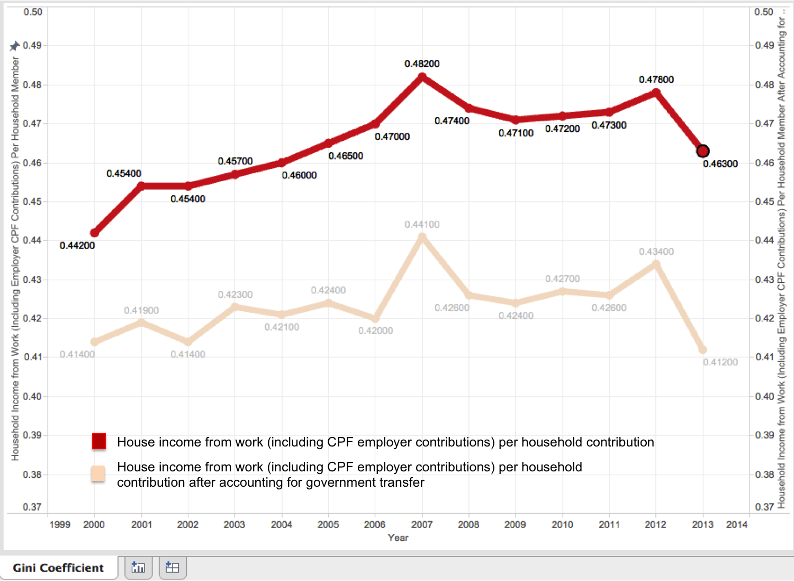
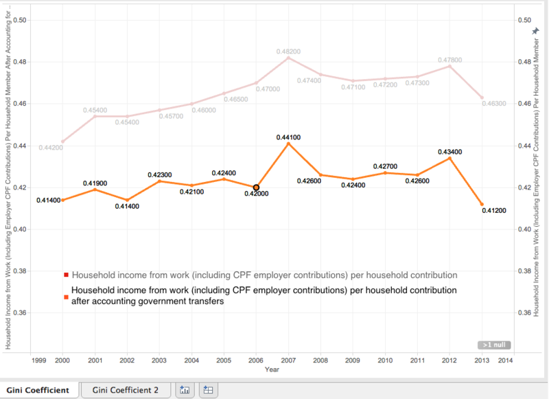
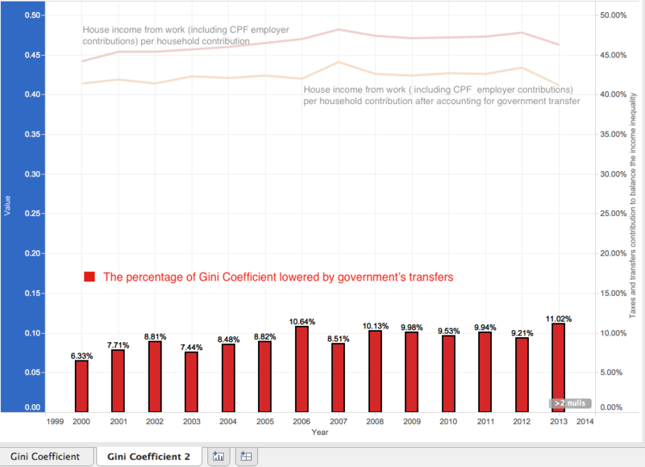
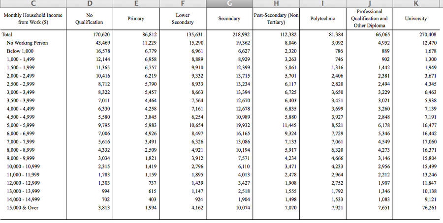
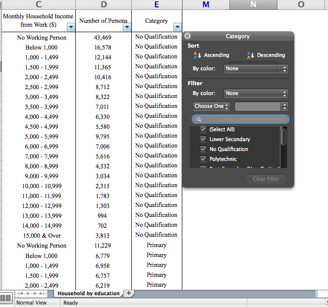
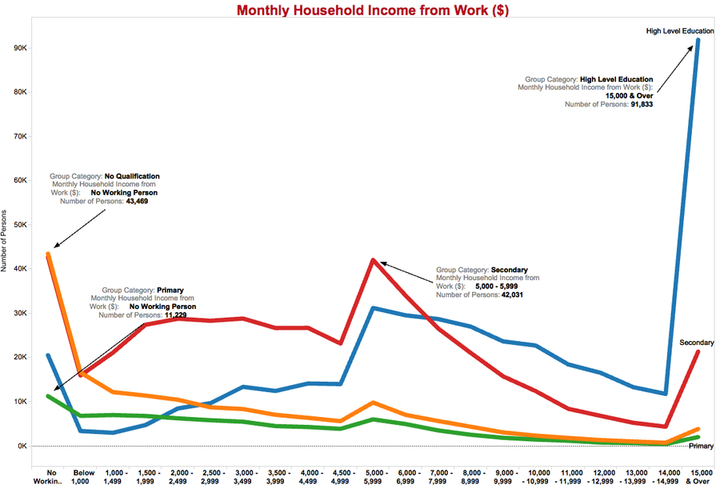
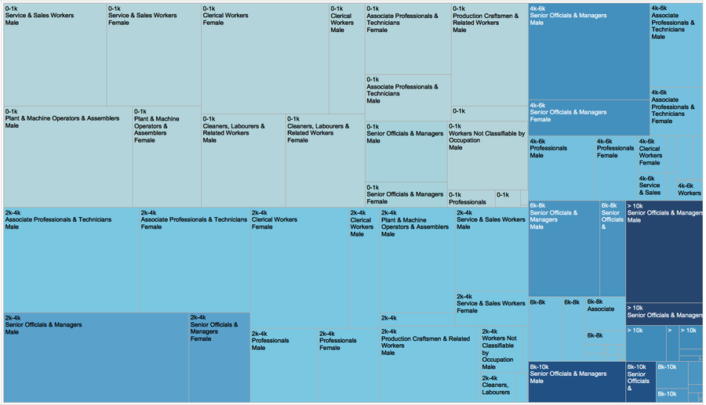
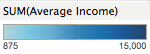

Data journalism is the use of data and number crunching in journalism to uncover, better explain and/or provide context to a news story. According to the Data Journalism Handbook, data can be either the tool used to tell a story, the source upon which a story is based, or both. It often involves the use of statistics, charts, graphs or info-graphics.
The secret of success lies to a good plan. Hence it is also important to have a strategy when we are doing the Visualization. Following are the steps in my plan:
Selecting the suitable data.'" I will need to select the dataset that can represent the problem. Study the dataset and its origin to understand what are the trend and that's the reason behind it.
Set the objectives'" After studying the data sheet and having the idea of the trend, the change point, listing all the point I would like to elaborate and look deeper inside.
Preparing the data sheet.'" After listing all the objectives, I need to prepare the data sheet for Visualization. This step includes deleting the useless/meaningless columns or rows, adding new columns etc.
Gini Coefficient: The Gini coefficient (also known as the Gini index or Gini ratio) (/dʒini/ jee-nee) is a measure of statistical dispersion intended to represent the income distribution of a nation's residents. This is the most commonly used measure of inequality. The coefficient varies between 0, which reflects complete equality and 100 (or 1), which indicates complete inequality (one person has all the income or consumption, all others have none).
Objective: Over the past 10 years, I am interested to find out the trend of Singapore's Gini Coefficient to see when does Singapore have the lowest and highest income inequality and what's the reason for that. These are the possible areas that I wish to substantiate my visualization:
The Gini Coefficient rate over the past 10 years
Whether government's intervention is effective or not ? And how much contribution government make to balance the income inequality ?
Is there a growing concern of Singapore's income inequality ?
The Gini Coefficient rate over the past 10 years:
The disparity in household income from work per household member among resident employed household reached the highest level, 0.482 in year 2007. And the Gini Coefficient declined from 0.478 in 2012 from 0.478 to 0.463 in 2013.

This Graph shows the Gini coefficient rate from 2003 until 2013.
I'm using Line Graph because Line Graph is the easiest way to show a trend and spot the highest and lowest point.
Based on the Graph, the trend is kept at a quite stable level except 2007, which shows a rapid increase over the year. A further exploration is needed to see what's happening in that year.
However, the Gini coefficient level also declined rapidly last year, from 0.478 in 2012 to 0.463 in 2013. From the row data itself is hard to tell the reason behind this drop, a further exploration is needed as well.
In conclusion, Singapore's income inequalities rate is kept at a level around 0.465. However, last year there's an obvious drop to 0.463. I will find out the reason behind and make a prediction in the later part of this page.
In conclusion, Singapore's income inequalities rate is kept at a level around 0.465. However, last year there's an obvious drop to 0.463. I will find out the reason behind and make a prediction in the later part of this page.


The first graph shows the Gini Coefficient after accounting government transfers.
The second graph indicates how much Gini rate does government transfer lowered.
Conclusion: government transfer is an effective tool that lowered the Gini coefficient at least 6.33 % and last year the government transfer lowered the Gini Coefficient by 11.02%, which is the lowest rate in the past 10 years! It is a great sign that government is doing something effective to balance the income inequalities.
Is there a growing concern of Singapore's income inequality?
By looking at analysis A and B, the Gini Coefficient is keeping climbing up in the past 5 years, although last year the situation seems becomes better, a strong attention is still needed to be paid on such issues.
Based on Observation 1 and 2, Singapore's income inequality is still a hot issue that is needed to be solved in the near future. One of the suggestion form the public is that to increase the education rate of Singapore citizen to equip people with knowledge and skills in order to earn a better life. So in the next section I would mainly focus on education to see whether education could ameliorate current situation.
Data Message:
I manage to find a dataset from data.gov.sg that has the relevant information I need.
The structure of the dataset is already quite neat so I just need to deleted those blank rows and the title to make sure the header is in the first row.
Remove the "Total" column because I don't want to show the total number in my graph.
Following is a screenshot of how the first version of data sheet looks like:

In order to compare different level of education qualification in a single graph, I added another column called "category" and category the total number of people in each education level. The screen shot below is the final version of data sheet.

Result:

We can see clearly from this graph that the very left, which have the lowest income and the very right, which has the highest level of income have really a huge amount of population. That's why the income gap is so big in Singapore. Let's see the break down of each education level.
No Qualification: From the first graph we can see that most of the people without a qualification lies to "below 2000" income group.
Primary Qualification: The Primary Qualification have a stable number of people for all the income group. But relatively this education level have less people with income higher than 5000 than people with income less than 5000. That means people with a primary qualification is very hard to get a income higher than 5000.
Secondary Qualification: There's a huge amount of people with a secondary qualification have income between 1000 to 7000. And for this group it is easier to have income higher than 7000 until 9000. The income higher than 10,000 is still relative low.
High Level Qualification: Most of the people with high level qualification could get an income higher than 6000 until 14,000. We can also see from the fourth graph that the people with the high level qualification is more possible to have the highest income (above $14,000 per month).
Conclusion: A higher education do brings a higher income for people. Especially if people want to have the extremely high income, a high-level education qualification is a must. We can imagine if most of the "No Qualification" members moved to the "Primary Qualification" group, there will be much less people have less than 1000 income. And the number of people in the income group "1000 - 4000" will increase a lot.
So my
suggestion is that: the first step is to remove the "No Qualification" group by providing the basic education to people who cannot afford their education fees and living cost. And once this step is more or less accomplished, government can consider move the group "primary qualification" to "Secondary Qualification" group so that the number of people with an income between 2000 and 5000 will dramatically increase. In that way, the income gap between rich people and poor people will be narrowed.


Result:
So below is the result:
We can see clearly from this graph that for the jobs such as: "professionals", "associate professionals & technicians", "cleaner, Laborers & related Workers", "serve and sales workers", females and male don't have much differences regarding income. However, for those jobs have relatively higher income such as "senior Officials & Managers", males have a obviously larger population. That means it is much harder for women to become a senior managers or higher designations.
Let's zoom in and compare the same job "senior Officials and Managers" in different income level. - Income between 0k and 1k, the number of male senior manager is almost the twice as the number of female senior manager;
- Income between 2k and 4k, the number of male senior manager is almost three times as the number of female senior manager;
- Income between 4k and 6k, the number of male senior manager is almost two and a half times as the number of female senior manager;
- Income between 6k and 8k, the number of male senior manager is almost three and a half times as the number of female senior manager;Such situation also happened to "clerical Workers", where women have a less population compare with male.
In overall, the income gap between male and female is not that critical but attention still need to be paid on improving female’s opportunities to obtain a relatively higher income jobs.
Based on the above 3 visualizations, the income inequity is still a serious problem because the Gini co-efficiency is constantly rising in the past 5 years. To balance the income, the government took some actions like tax and government returns and eventually it works well. However, the attention is still needed to be paid on this issue because the Gini coefficiency is above 0.4 and Singapore is the second country who has the highest Gini Co-efficiency.
To dig deeper inside this issue and find a possible solution, I looked inside the relationship between education and income level. Refer to the graph "Monthly household income from work", a higher education could have a higher possibility to bring more fortune to people. So I suggest government to make an effort to ensure all the residences should have an at least primary education qualification. in that way the population who has income lower than 1000 will reduce rapidly.
 Tools Used:
Tools Used: